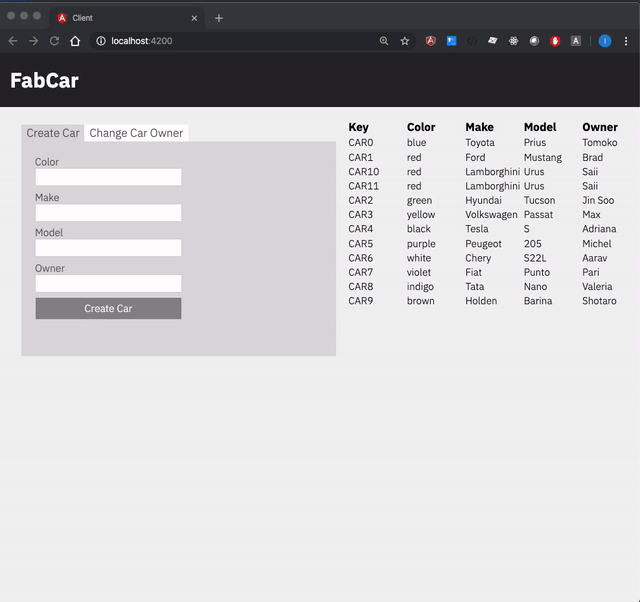
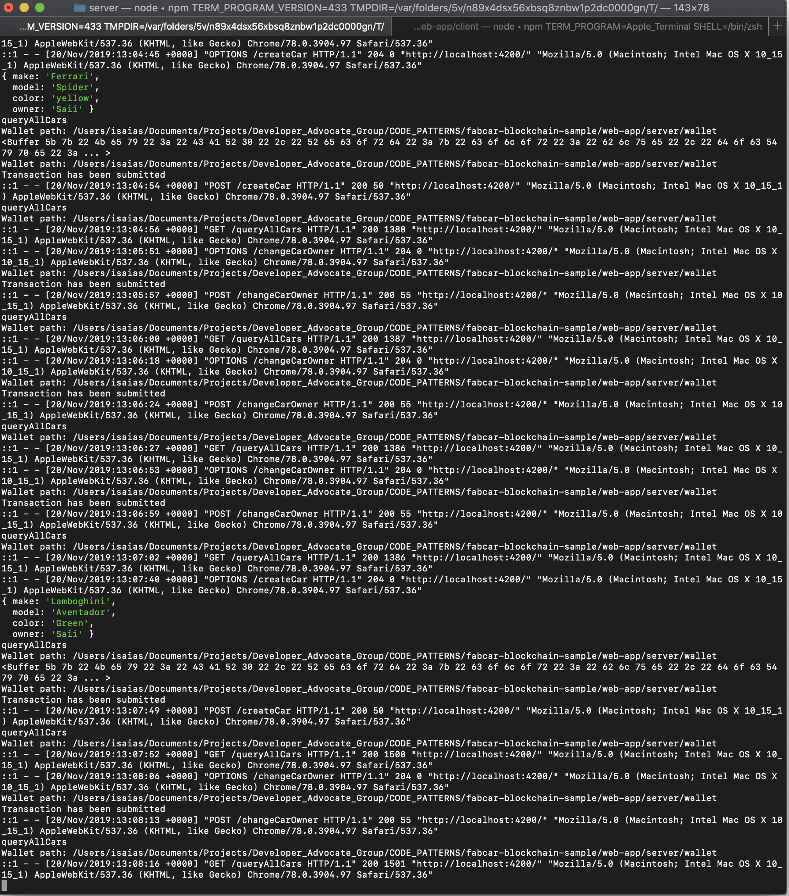

Lab 7: Run the application
Enroll admin
First, navigate to the web-app directory, and install the node dependencies.
cd web-app/server
npm install
Run the enrollAdmin.js script
node enrollAdmin.js
You should see the following in the terminal:
msg: Successfully enrolled admin user app-admin and imported it into the wallet
Register User
Run the registerUser.js script.
node registerUser.js
You should see the following in the terminal:
Successfully registered and enrolled admin user user1 and imported it into the wallet
Start the application server
From the server directory, start the server.
npm start
Start the web client
In a new terminal, open the web client folder and install the dependencies.
cd web-app/client
npm install
Start the client:
npm start
You can find the app running at http://localhost:4200/

You can go to the IBM Blockchain Platform console to monitor your users and get information on your channel including the blocks added.
Sample server console log:

Troubleshooting
If you encounter an error
discover error: access denied, you need to set thegatewayDiscoveryproperly in yourconfig.jsonfile. This is REQUIRED You must set it as follows to connect to IBP:`"gatewayDiscovery": {"enabled": true, "asLocalhost": false }`